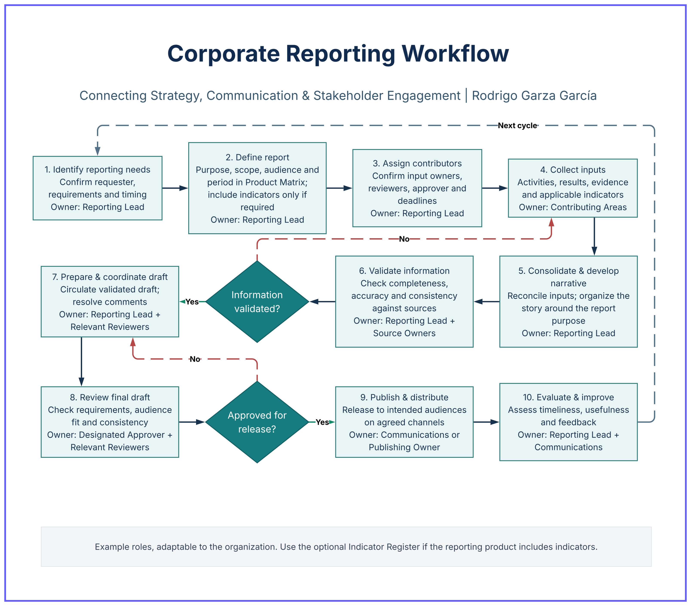
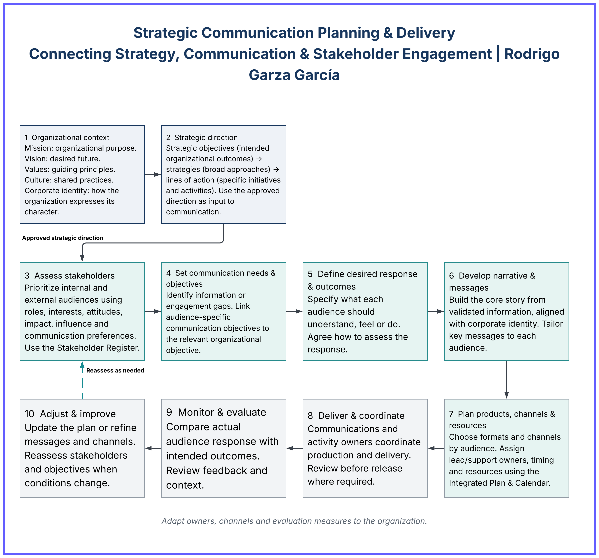

Connecting Strategy, Communication & Stakeholder Engagement
This project shows how an organization can turn strategic priorities into audience-specific communication and produce reports from information contributed by several teams. Two workflows show who contributes, where to review information and how to use feedback in the next cycle.
Experience behind the model
The framework draws on approximately a decade in the public sector and in public and international affairs, including more than seven years at Mexico’s Ministry of Foreign Affairs. Coordinating institutional reports meant defining what each area needed to contribute, reconciling information from multiple sources and preparing material for executive review.
I adapted those practices to corporate settings using Business Analysis techniques for stakeholder assessment, requirements, process modeling and validation, alongside concepts from SAGE’s Corporate Communication: Theory and Practice.
From organizational direction to audience outcomes
Mission defines the organization’s purpose. Vision describes its desired future. Values guide decisions, culture reflects shared practices and corporate identity expresses the organization’s character. Strategic objectives define the outcomes the organization seeks. Strategies set broad approaches, and lines of action translate them into initiatives and activities.
Communication planning starts from that approved direction. Stakeholder assessment identifies whose needs, interests and feedback matter. For each audience, the communication plan defines the desired response, then selects messages, channels and ways to assess that response. Corporate reporting supplies validated information on activities and results for briefings, updates and decisions.
The two workflows
Corporate Reporting Workflow


Strategic Communication Planning & Delivery


The applied toolkit
| Instrument | What it supports |
|---|---|
| Stakeholder Register | Records roles, interests, attitudes, impact, influence and communication preferences. It draws on IBM’s Business Analyst Stakeholder Register. |
| Reporting Product Matrix | Defines purpose, scope, audience, period and frequency for each report. A separate register documents any applicable indicators, their sources and owners. |
| Integrated Communication & Reporting Plan | Connects priorities, objectives, audiences, messages, products and channels to owners, resources, dates and evaluation in one plan and calendar. |
| Corporate Reporting Workflow | Maps contributor handoffs, validation, review and approval so teams can coordinate the report from intake through follow-up. |
Adapting the framework
Start with one reporting product or communication priority. Confirm which teams own the information, who needs it and who approves release. An executive briefing may need a short validated narrative. A progress report may call for defined measures and additional source checks. A stakeholder update can use questions and feedback to assess whether the audience understood the message.
Scale responsibilities, review steps and evaluation to the organization’s structure, resources and stakeholder needs.